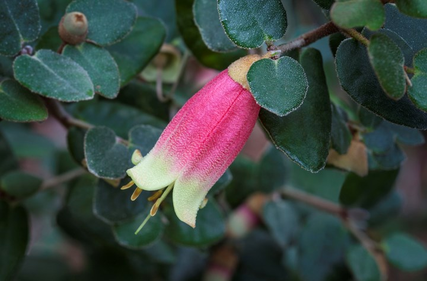
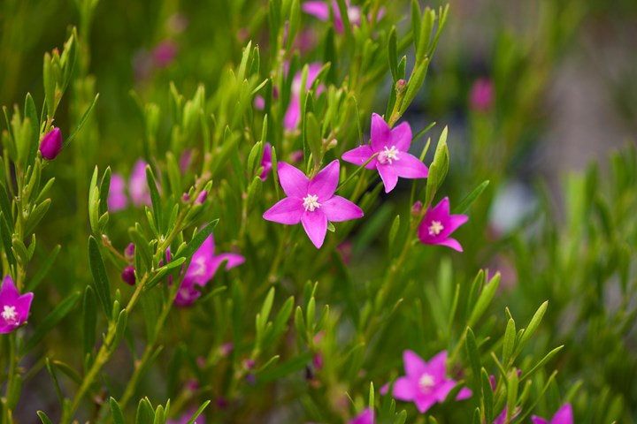

The waratah is arguably the most beautiful and instantly recognisable of our native wildflowers. Waratahs thrive in free-draining, preferably slightly acid soil, with material such as a leaf compost blended in. Don't plant into clay soil as they won't tolerate wet feet.
Wattle
£2.60
The Golden Wattle (Acacia pycnantha) variety is the national flower of Australia. Wattles grow happily in any sunny to semi-shaded spot.

Canberra
£1.50
Correa ‘Canberra Bells’ produces a mass of red and cream bell-shaped flowers throughout autumn on a compact shrub to 1m. It grows well in almost any soil, in shade or full sun, but prefers a light sandy soil with good drainage and a position protected from wind.

Crowea
With star-shaped flowers in white or pink, croweas are available as low-growing groundcovers or compact shrubs. Growing 20cm–1.5m high and spreading 75cm – 1.5m, they make great border plants.